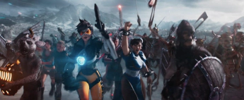

Film de science-fiction incontournable de Steven Spielberg de la décennie de 2010, Ready Player One a été un trésor de références dans ce film.
L’histoire se déroule en 2045 dans un monde assez chaotique avec la guerre, la famine et la pauvreté. Cependant deux personnes d’une entreprise du nom de Gregarious Games à créer un monde virtuel, l’OASIS. Il est basé au début comme un jeu de type MMORPG (Massive Multiplayer Online Role Playing Game). Le créateur du jeu est décédé, mais une vidéo est diffusée expliquant que un Easter Egg a été caché dans le jeu. Le gagnant aura Film de science-fiction incontournable de Steven Spielberg de la décennie de 2010, Ready Player One a été un trésor de références dans ce film, son héritage qui est au montant de 500 milliards de dollars. Cependant il est caché dans l'Oasis mais pour le trouver, il est très compliqué à trouver. C'est alors que Wade Watts, un jeune orphelin qui vit avec sa tante Alice. Mais dans l'Oasis il a le pseudonyme de Parzival.
Bien évidemment, si les personnes dans l’OASIS doivent rechercher le fameux easter egg, et bien dans le film il y en a comme le Géant de fer, il a aussi la DeLorean, le véhicule mythique de Retour vers le Futur. Si vous connaissez toutes les références du film. Mais il y a aussi des références par rapport à des films comme Harry Potter et les reliques de la mort, Deadpool, Batman ou encore Wonder Woman même pour les références pour les jeux vidéos, nous avons Overwatch où l'on voit le personnage de Tracer, mais aussi le commandant Shepeard de Mass Effect. Il y en a trop ! Ce film est une pépite pour les fans de jeux vidéo ou de films.
Si on pense que Ready Player One est orienté jeux vidéo avec des références. Alors la musique va aussi vous intéresser.